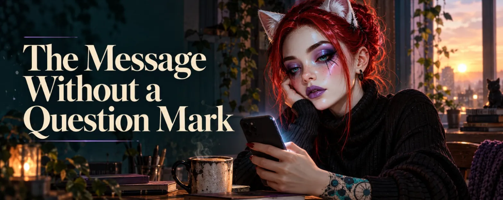

The Message Without a Question Mark
How do you become friends after you’ve loved each other? A text about thin glass, two fears pulling in opposite directions, and a message you type five times and delete four.
"Good morning ☀️"
Typed. Deleted. Typed again, without the sun this time, because maybe the sun is already too much. Deleted again.
You may have had the best conversations of your life in text. All night long, pages long, never once at a loss for words. And now you sit there and lose to two words and an emoji.
The message is for someone you had an intimate, romantic relationship with. It's over, and you both said you want to stay friends. Or at least try. And ever since, you've been trying to figure out how that actually works. There's no manual for it. There are hundreds of texts about how to lose someone, and surprisingly few about how to keep someone, just differently.
Not an Application
Let's get this out of the way: this isn't about winning someone back. Maybe the wish is still there. When chapters are left open, that's normal, and nobody has to pretend it's gone. You don't toss a book with unfinished chapters into the recycling. But that's a different text. This one is about something smaller, which turns out to be much harder.
It's about becoming friends without becoming acquaintances.
Acquaintances like each other's posts. Acquaintances write "Happy birthday" and mean it. Acquaintances ask "How are you?" and accept "Fine" as an answer, because it isn't their job to dig deeper. There's nothing wrong with that. Most people in our lives are acquaintances, and the world would be exhausting if it were otherwise.
But you two were never acquaintances. You know how the other one writes when they're tired. You know which jokes land and which only get a polite laugh. You know what goes unsaid when something hurts. That knowledge doesn't vanish just because the label changed. You can close a door. But you can't pretend you no longer know where the furniture stands in the room behind it.
So the question isn't whether the special connection stays. It stays, whether you want it to or not. The question is what you do with it now.
And yes, it takes energy. Friendships take energy, like any other relationship. We like to pretend friendship is love's little low-maintenance sister, the one you put on the windowsill and water every few weeks. She isn't. She needs time, attention, honesty, and she needs you to reach out even when you don't feel like it.
The difference between a romantic and a platonic relationship is smaller than many people think anyway. Both can have closeness, both can have tenderness, both can have sex. The romantic one just adds something on top: the other person becomes a home. When that falls away, you're not left with nothing. Almost everything is still there. You just don't live there anymore. 🏠
Two Fears Holding Each Other in Place
What's between you right now is made of glass. Thin glass. The kind that stands at the very back of the cupboard because it's too beautiful to use and too fragile to throw away.
And you have two fears at the same time. The first: that you'll rekindle something that has only just, with a lot of effort, burned down. One sentence too warm, one heart too many, one joke from back then, and suddenly something is glowing again that neither of you ordered. The second: distance. That you'll become so careful with each other that eventually only the carefulness is left. That you won't lose each other in a fight, but in politeness.
The nasty part is that the two pull in opposite directions. Take a step toward the other person, and the first one speaks up. Stand still, and it's the second. So there you are, in the middle of the room, glass in hand, not daring to put it down or to drink from it.
That's what this is about. Not whether you can be friends. But the fear of carelessly breaking something fragile, in one direction or the other.
The Small Questions That Aren't Small
From the outside they look ridiculous. From the inside they're huge.
Do you say good morning every day? If you do, it becomes a ritual. Rituals become expectations, expectations become obligations, and obligations become a burden. And burden is exactly the word you're giving a very wide berth right now. If you don't, you wait. And the other side is probably waiting too, out of exactly the same consideration. Two people holding the door for each other, smiling politely and saying "After you" until the shop closes.
Can you still tease each other? Maybe teasing was half of your language. Leave it out, and what's left is very polite and very thin, and it sounds like acquaintances. But teasing between exes is a minefield where the mines flirt back. A wink can be just a wink. Or it can be a question neither of you wants to answer.
Can you still put each other in your content? Anyone who has created things together, images, stories, posts, runs into this question sooner or later. Can the other person still appear in one of your stories? Can you show up in theirs? Where's the line between "We're friends and make things together" and "Oh, they're still everywhere"?
And when does it get weird?
The most honest answer I have: you notice it in yourself. If you send something and then stare at the screen counting minutes, it wasn't a message. It was a test. And tests aren't friendship, tests are exam anxiety with emojis. If you send it and put the phone down, it was fine, no matter what it said.
And if it does get weird, you're allowed to say so. A spoken "That was weird just now" costs one sentence. An unspoken one costs the friendship in the long run. The math isn't hard, we just like to forget it.
The Doubt That Needs No Proof
Relationships end for reasons. Sometimes the reason is a weight: too much at once, too little air, a life that just doesn't have room anymore. And whoever is left behind starts looking for themselves inside that word.
Maybe nobody said you were the weight. That matters, and it's worth reading it to yourself now and then. But doubt needs no proof. It lives in the gaps. It doesn't arrive as an accusation but as a quiet question at awkward moments: brushing your teeth, at the supermarket, in the middle of a completely different thought. Was I part of what got too heavy? Anyone with RSD knows that question with a megaphone. But even without it, I think it comes to almost everyone who has been left.
And then there's often something else you don't like to admit: a little anger.
Not loud. More like a pebble in your shoe that you carry around all day, because stopping to shake it out would somehow look like drama. You weigh every message. You make sure not to be too much. You tiptoe through a friendship as if you had something to make up for. And yet you weren't the one who ended it. You weren't the reason, you're told, and on good days you even believe it. Still, you're doing the work of someone who did something wrong.
It's a strange arrangement: the one who stayed apologizes for being there.
The anger is allowed. But it doesn't belong in your messages, and it isn't an accusation against anyone. It's information. It tells you that you're making yourself smaller than you need to be. That's all it's supposed to say. You handle the rest yourself.
And once the pebble is finally out, something else is left, something quieter. You know what you had in this person. How important they were to you. And if you're completely honest: how important they still are. The ending didn't abolish that, it just made it less comfortable.
In the end, all the doubt, the anger and the small questions shrink down to a single one: Do I want to lose this person? Or do I want to keep them, just in a different form?
If the answer is "keep", then the rest is no longer a riddle, it's work. Clumsy, wobbly, sometimes embarrassing. But work is something you can start.
People Drift Apart
And then there's the perfectly ordinary truth: people drift apart. All of them, eventually, a little. Sometimes a friend has a child, and suddenly her life turns on an axis you can't reach anymore. Nobody did anything wrong, you just don't fit together as well as you used to. Sometimes a new love comes along, and the time that used to be there for you now lives somewhere else. And sometimes, and that's the most uncomfortable case, we're simply too comfortable to make more of an effort.
We're surprisingly good at that, by the way: crying after people. We can fill whole evenings missing someone we could have reached with a single message. Missing is more comfortable than writing. Missing never gets an answer that could hurt.
Maybe you also have friends who tell you to let it go. Take some distance, detach, protect yourself. They mean well. They've seen you on evenings when you weren't looking your best, and they'd like there to be fewer of those evenings. Maybe they're right. That's worth taking seriously.
But I know the other side too. There are too many people behind me.
Some disappointed me. Some hurt me. And some, and that's the part that echoes the longest, didn't even mean to. It just happened. Nobody was the villain, there was no big bang, just at some point that one moment after which I couldn't forgive anymore. Not because I didn't want to. I simply didn't know how. And so they stayed behind, a quiet row of names I no longer write to and still think about sometimes, usually right when I didn't want to think about them at all.
Maybe you have a row like that too. And maybe you don't want to add another name to it.
That isn't stubbornness. Letting go costs something too, and it isn't automatically the cheaper bill. Letting go is sometimes wisdom. But sometimes it's just the old habit of running away, wearing a nice dress and calling itself wisdom. Which one it is this time, you'll only find out if you stay a while.
"I Don't Know"
And then there's impatience. How long will this take? When will it feel normal again? The answer you get most often is: I don't know. Usually that's not an excuse but the truth. The other person really doesn't know. It's just that in this case the truth helps surprisingly little.
I went through this once. A relationship had ended, and when I asked when we could talk again, the answer was time, with no number attached. So I kept still. For six months. I didn't want to push, didn't want to be a burden, didn't want to break anything. I was very, very considerate. And when I finally worked up the courage, all or nothing, one single message, the account had already been gone for a month. And with it the person behind it. Forever.
I'm not telling you this to make you impatient. I'm telling you because silence isn't automatically consideration. Sometimes it's just a very polite way of losing sight of each other. Patience doesn't mean closing the door and waiting outside it. Patience means leaving the door open and showing now and then that you're still there. Quietly. Without a question mark.
What You Actually Wish For
It's smaller than you'd think. And that's exactly why it's so hard to get.
You want to be needed. Not as the rescuer, not as the person who's always there and catches everything. Just as one of the people who come to mind when something happens. Good or bad. "I have to tell you this" is a very small sentence, and you'd like it to come up now and then.
You want to laugh together again. Uninhibited. About something silly, without one of you checking afterwards whether that laugh meant too much. A laugh that's just a laugh is a surprisingly rare animal between two people with history. You have to feed it very carefully. 🐈
And you want the other person to be able to come to you with a problem without it costing anything. No bill. No unspoken "Well, I listened to you, so ...". No hope riding along inside the help like a stowaway.
Honestly, that's the hardest part: helping without hoping. Help that hopes is a loan. What you actually want to give is a gift. And gifts have the inconvenient property that you can't control what the other person does with them. That's the price. I think it's worth it.
What You Can Tell Yourself
Every friendship starts out uncertain. Who writes first, how often is normal, what's too much, what's too little. It's no different here. You just have the bad luck of remembering how it felt when everything was easy. You're not stumbling on new ground, you're stumbling on old ground, and that feels more embarrassing, even though it's exactly the same stumble.
A few sentences help. Not rules for the other person, only for you:
- A message is an offer, not a demand. If you can't send it that way, don't send it.
- Silence isn't an answer. Silence is silence. People are tired, busy, in the middle of their own lives, and that surprisingly rarely has anything to do with you.
- Whatever feels weird gets said, briefly and kindly, before it grows.
- You don't have to prove you're not a burden. A burden that keeps asking whether it's a burden becomes one precisely by asking.
- You don't have to defend the special connection. It gets lived in small things, or it doesn't. Either way, it can't be forced.
The doubt won't go away because of this. You can't decide to stop doubting, any more than you can decide not to have sore muscles. But it gets quieter when there are good days in between. And good days don't come from thinking, they come from doing. Unfortunately. Because thinking is something we're all very good at.
So don't type "Good morning" into the void today.
Send something that made you laugh instead. A silly picture, a dumb thought, anything that reminded you of an old joke of yours. No question mark. Nothing anyone owes you.
And be honest with yourself while you do it: of course the answer matters to you. Whoever pretends it doesn't usually lies loudest to themselves. A message without a question mark doesn't mean you expect nothing. It only means you don't demand anything. That's a difference, and it's the whole trick.
And if the silence lasts longer than a tired day, don't guess. Write the one sentence neither of you dares to: "I don't know how often I can reach out without it being too much for you. Just tell me." That's not drama. That's just one of two people who stops holding the door and simply walks through it.
Hit send. Then put the phone face down on the table and go make coffee. ☕
First published on X. Replies and conversation live there.